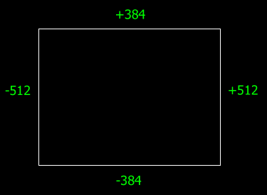
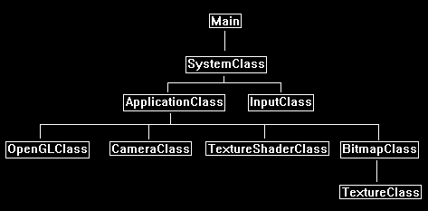
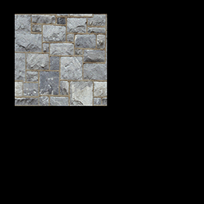

Being able to render 2D images to the screen is very useful.
For example, most user interfaces, sprite systems, and text engines are made up of 2D images.
OpenGL 4.0 allows you to render 2D images by mapping them to polygons and then rendering using an orthographic projection matrix.
2D Screen Coordinates
To render 2D images to the screen you will need to calculate the screen X and Y coordinates.
For OpenGL the middle of the screen is 0,0.
From there the left side of the screen and the bottom side of the screen go in the negative direction.
The right side of the screen and the top of the screen go in the positive direction.
As an example, take a screen that is 1024x768 resolution, the coordinates for the borders of the screen would be as follows:

So, keep in mind that all your 2D rendering will need to work with these screen coordinate calculations and that you will also need the size of the user's window/screen for correct placement of 2D images.
Disabling Z buffer in OpenGL 4.0
To draw in 2D you should be disabling the Z buffer.
When the Z buffer is turned off it will write the 2D data over top of whatever is in that pixel location.
Make sure to use the painter's algorithm and draw from the back to the front to ensure you get your expected rendering output.
Once you are done drawing 2D graphics re-enable the Z buffer again so you can render 3D objects properly again.
To turn the Z buffer on and off you will need to use glEnable(GL_DEPTH_TEST) and glDisable(GL_DEPTH_TEST).
I have encapsulated those two function calls already in the OpenGLClass with the TurnZBufferOn() and TurnZBufferOff() functions.
Dynamic Vertex Buffers
Another new concept that will be introduced is dynamic vertex buffers.
So far, we have used static vertex buffers in the previous tutorials.
The issue with static vertex buffers is that you shouldn't change the data inside the buffer ever.
Dynamic vertex buffers on the other hand allow us to manipulate the information inside the vertex buffer each frame if we need to.
These buffers are slower than static vertex buffers but that is the tradeoff for the extra functionality.
The reason we use dynamic vertex buffers with 2D rendering is because we often want to move the 2D image around the screen to different locations.
A good example is a mouse pointer, it gets moved often so the vertex data that represents its position on the screen needs to change often as well.
Two extra things to note.
Don't use dynamic vertex buffers unless they are absolutely called for, they are quite a bit slower than static buffers.
Secondly never destroy and recreate a static vertex buffer each frame, as that is far worse in overall performance when compared to using dynamic vertex buffers.
Orthographic Projection in OpenGL 4.0
The final new concept required to render in 2D is to use an orthographic projection matrix in place of the regular 3D projection matrix.
This will allow you to render to 2D screen coordinates.
Remember that we already did create this matrix in the OpenGLClass initialization code:
// Create an orthographic projection matrix for 2D rendering.
BuildOrthoMatrix(m_orthoMatrix, (float)screenWidth, (float)screenHeight, screenNear, screenDepth);
And to retrieve the ortho matrix for rendering we just call OpenGLClass::GetOrthoMatrix.
Framework
The code in this tutorial is based on the previous tutorials but has been modified.
The major difference in this tutorial is that ModelClass has been replaced with BitmapClass and that we are using the TextureShaderClass again instead of the LightShaderClass.
The framework will look like the following:

Bitmapclass.h
BitmapClass will be used to represent an individual 2D image that needs to be rendered to the screen.
For every 2D image you have you will need a new BitmapClass for each.
Note that this class is just the ModelClass re-written to handle 2D images instead of 3D objects.
////////////////////////////////////////////////////////////////////////////////
// Filename: bitmapclass.h
////////////////////////////////////////////////////////////////////////////////
#ifndef _BITMAPCLASS_H_
#define _BITMAPCLASS_H_
///////////////////////
// MY CLASS INCLUDES //
///////////////////////
#include "textureclass.h"
////////////////////////////////////////////////////////////////////////////////
// Class Name: BitmapClass
////////////////////////////////////////////////////////////////////////////////
class BitmapClass
{
Each bitmap image is still a polygon object that gets rendered similar to 3D objects.
For 2D images we just need a position vector and texture coordinates.
private:
struct VertexType
{
float x, y, z;
float tu, tv;
};
public:
BitmapClass();
BitmapClass(const BitmapClass&);
~BitmapClass();
bool Initialize(OpenGLClass*, int, int, char*, int, int);
void Shutdown();
void Render();
void SetTexture(unsigned int);
void SetRenderLocation(int, int);
private:
bool InitializeBuffers();
void ShutdownBuffers();
bool UpdateBuffers();
void RenderBuffers();
bool LoadTexture(char*);
void ReleaseTexture();
The BitmapClass will need to maintain some extra information that a 3D model wouldn't such as the screen size, the bitmap size, and the last place it was rendered.
We have added extra private variables here to track that extra information.
private:
OpenGLClass* m_OpenGLPtr;
int m_vertexCount, m_indexCount, m_screenWidth, m_screenHeight, m_bitmapWidth, m_bitmapHeight, m_renderX, m_renderY, m_prevPosX, m_prevPosY;
unsigned int m_vertexArrayId, m_vertexBufferId, m_indexBufferId;
TextureClass* m_Texture;
};
#endif
Bitmapclass.cpp
////////////////////////////////////////////////////////////////////////////////
// Filename: bitmapclass.cpp
////////////////////////////////////////////////////////////////////////////////
#include "bitmapclass.h"
The class constructor initializes all the private pointers in the class.
BitmapClass::BitmapClass()
{
m_OpenGLPtr = 0;
m_Texture = 0;
}
BitmapClass::BitmapClass(const BitmapClass& other)
{
}
BitmapClass::~BitmapClass()
{
}
bool BitmapClass::Initialize(OpenGLClass* OpenGL, int screenWidth, int screenHeight, char* textureFilename, int renderX, int renderY)
{
bool result;
// Store a pointer to the OpenGL object.
m_OpenGLPtr = OpenGL;
In the Initialize function both the screen size and where the image gets rendered is stored.
These will be required for generating exact vertex locations during rendering.
// Store the screen size.
m_screenWidth = screenWidth;
m_screenHeight = screenHeight;
// Store where the bitmap should be rendered to.
m_renderX = renderX;
m_renderY = renderY;
The buffers are then created and the texture for this bitmap image is also loaded in.
// Initialize the vertex and index buffer that hold the geometry for the bitmap.
result = InitializeBuffers();
if(!result)
{
return false;
}
// Load the texture for this model.
result = LoadTexture(textureFilename);
if(!result)
{
return false;
}
return true;
}
The Shutdown function will release the vertex and index buffers, the texture that was used for the bitmap image, and the OpenGLClass pointer.
void BitmapClass::Shutdown()
{
// Release the texture used for this model.
ReleaseTexture();
// Release the vertex and index buffers.
ShutdownBuffers();
// Release the pointer to the OpenGL object.
m_OpenGLPtr = 0;
return;
}
Render puts the buffers of the 2D image on the video card.
The UpdateBuffers function is called with the position parameters.
If the position has changed since the last frame, it will then update the location of the vertices in the dynamic vertex buffer to the new location.
If not, it will skip the UpdateBuffers function.
After that the RenderBuffers function will prepare the final vertices/indices for rendering.
void BitmapClass::Render()
{
// Update the buffers if the position of the bitmap has changed from its original position.
UpdateBuffers();
// Put the vertex and index buffers on the graphics pipeline to prepare them for drawing.
RenderBuffers();
return;
}
InitializeBuffers is the function that is used to build the vertex and index buffer that will be used to draw the 2D image.
bool BitmapClass::InitializeBuffers()
{
VertexType* vertices;
unsigned int* indices;
int i;
The previous rendering location is first initialized to negative one.
This will be an important variable that will locate where it last drew this image.
If the image location hasn't changed since last frame, then it won't modify the dynamic vertex buffer which will save us some cycles.
// Initialize the previous rendering position to negative one.
m_prevPosX = -1;
m_prevPosY = -1;
We set the vertices to six since we are making a square out of two triangles, so six points are needed.
The indices will be the same.
// Set the number of vertices in the vertex array.
m_vertexCount = 6;
// Set the number of indices in the index array.
m_indexCount = m_vertexCount;
// Create the vertex array.
vertices = new VertexType[m_vertexCount];
// Create the index array.
indices = new unsigned int[m_indexCount];
// Initialize the vertex arrays to zeros at first.
memset(vertices, 0, (sizeof(VertexType) * m_vertexCount));
// Load the index array with data.
for(i=0; i<m_indexCount; i++)
{
indices[i] = i;
}
// Allocate an OpenGL vertex array object.
m_OpenGLPtr->glGenVertexArrays(1, &m_vertexArrayId);
// Bind the vertex array object to store all the buffers and vertex attributes we create here.
m_OpenGLPtr->glBindVertexArray(m_vertexArrayId);
// Generate an ID for the vertex buffer.
m_OpenGLPtr->glGenBuffers(1, &m_vertexBufferId);
Here is the big change in comparison to the ModelClass.
We are now creating a dynamic vertex buffer so we can modify the data inside the vertex buffer each frame if we need to.
To make it dynamic we set the gpu hint to GL_DYNAMIC_DRAW.
// Bind the vertex buffer and load the vertex data into the vertex buffer. Set gpu hint to dynamic since it will change once in a while.
m_OpenGLPtr->glBindBuffer(GL_ARRAY_BUFFER, m_vertexBufferId);
m_OpenGLPtr->glBufferData(GL_ARRAY_BUFFER, m_vertexCount * sizeof(VertexType), vertices, GL_DYNAMIC_DRAW);
// Enable the two vertex array attributes.
m_OpenGLPtr->glEnableVertexAttribArray(0); // Vertex position.
m_OpenGLPtr->glEnableVertexAttribArray(1); // Texture coordinates.
// Specify the location and format of the position portion of the vertex buffer.
m_OpenGLPtr->glVertexAttribPointer(0, 3, GL_FLOAT, false, sizeof(VertexType), 0);
// Specify the location and format of the texture coordinate portion of the vertex buffer.
m_OpenGLPtr->glVertexAttribPointer(1, 2, GL_FLOAT, false, sizeof(VertexType), (unsigned char*)NULL + (3 * sizeof(float)));
// Generate an ID for the index buffer.
m_OpenGLPtr->glGenBuffers(1, &m_indexBufferId);
We don't need to make the index buffer dynamic since the six indices will always point to the same six vertices even though the coordinates of the vertex may change.
// Bind the index buffer and load the index data into it. Leave it static since the indices won't change, only the vertices.
m_OpenGLPtr->glBindBuffer(GL_ELEMENT_ARRAY_BUFFER, m_indexBufferId);
m_OpenGLPtr->glBufferData(GL_ELEMENT_ARRAY_BUFFER, m_indexCount* sizeof(unsigned int), indices, GL_STATIC_DRAW);
// Now that the buffers have been loaded we can release the array data.
delete [] vertices;
vertices = 0;
delete [] indices;
indices = 0;
return true;
}
ShutdownBuffers releases the vertex array object, the vertex buffer, and the index buffer.
void BitmapClass::ShutdownBuffers()
{
// Release the vertex array object.
m_OpenGLPtr->glBindVertexArray(0);
m_OpenGLPtr->glDeleteVertexArrays(1, &m_vertexArrayId);
// Release the vertex buffer.
m_OpenGLPtr->glBindBuffer(GL_ARRAY_BUFFER, 0);
m_OpenGLPtr->glDeleteBuffers(1, &m_vertexBufferId);
// Release the index buffer.
m_OpenGLPtr->glBindBuffer(GL_ELEMENT_ARRAY_BUFFER, 0);
m_OpenGLPtr->glDeleteBuffers(1, &m_indexBufferId);
return;
}
The UpdateBuffers function is called each frame to update the contents of the dynamic vertex buffer to re-position the 2D bitmap image on the screen if need be.
bool BitmapClass::UpdateBuffers()
{
VertexType* vertices;
void* dataPtr;
float left, right, top, bottom;
We check if the position to render this image has changed.
If it hasn't changed then we just exit since the vertex buffer doesn't need any changes for this frame.
This check can save us a lot of processing.
// If the position we are rendering this bitmap to hasn't changed then don't update the vertex buffer.
if((m_prevPosX == m_renderX) && (m_prevPosY == m_renderY))
{
return true;
}
If the position to render this image has changed then we record the new location for the next time we come through this function.
// If the rendering location has changed then store the new position and update the vertex buffer.
m_prevPosX = m_renderX;
m_prevPosY = m_renderY;
// Create the vertex array.
vertices = new VertexType[m_vertexCount];
The four sides of the image need to be calculated.
See the diagram at the top of the tutorial for a complete explanation.
// Calculate the screen coordinates of the left side of the bitmap.
left = (float)((m_screenWidth / 2) * -1) + (float)m_renderX;
// Calculate the screen coordinates of the right side of the bitmap.
right = left + (float)m_bitmapWidth;
// Calculate the screen coordinates of the top of the bitmap.
top = (float)(m_screenHeight / 2) - (float)m_renderY;
// Calculate the screen coordinates of the bottom of the bitmap.
bottom = top - (float)m_bitmapHeight;
Now that the coordinates are calculated create a temporary vertex array and fill it with the new six vertex points.
// Load the vertex array with data.
// First triangle.
vertices[0].x = left; // Top left.
vertices[0].y = top;
vertices[0].z = 0.0f;
vertices[0].tu = 0.0f;
vertices[0].tv = 1.0f;
vertices[1].x = right; // Bottom right.
vertices[1].y = bottom;
vertices[1].z = 0.0f;
vertices[1].tu = 1.0f;
vertices[1].tv = 0.0f;
vertices[2].x = left; // Bottom left.
vertices[2].y = bottom;
vertices[2].z = 0.0f;
vertices[2].tu = 0.0f;
vertices[2].tv = 0.0f;
// Second triangle.
vertices[3].x = left; // Top left.
vertices[3].y = top;
vertices[3].z = 0.0f;
vertices[3].tu = 0.0f;
vertices[3].tv = 1.0f;
vertices[4].x = right; // Top right.
vertices[4].y = top;
vertices[4].z = 0.0f;
vertices[4].tu = 1.0f;
vertices[4].tv = 1.0f;
vertices[5].x = right; // Bottom right.
vertices[5].y = bottom;
vertices[5].z = 0.0f;
vertices[5].tu = 1.0f;
vertices[5].tv = 0.0f;
Now copy the contents of the vertex array directly into the vertex buffer in memory using the glMapBuffer and memcpy functions.
// Bind the vertex buffer.
m_OpenGLPtr->glBindBuffer(GL_ARRAY_BUFFER, m_vertexBufferId);
// Get a pointer to the buffer's actual location in memory.
dataPtr = m_OpenGLPtr->glMapBuffer(GL_ARRAY_BUFFER, GL_WRITE_ONLY);
// Copy the vertex data into memory.
memcpy(dataPtr, vertices, m_vertexCount * sizeof(VertexType));
// Unlock the vertex buffer.
m_OpenGLPtr->glUnmapBuffer(GL_ARRAY_BUFFER);
// Now that the vertex buffer has been loaded we can release the array data.
delete [] vertices;
vertices = 0;
return true;
}
The RenderBuffers function sets up the vertex and index buffers on the gpu to be drawn by the shader.
void BitmapClass::RenderBuffers()
{
// Bind the vertex array object that stored all the information about the vertex and index buffers.
m_OpenGLPtr->glBindVertexArray(m_vertexArrayId);
// Render the vertex buffer using the index buffer.
glDrawElements(GL_TRIANGLES, m_indexCount, GL_UNSIGNED_INT, 0);
return;
}
The following function loads the texture that will be used for drawing the 2D image.
Note that we use the width and height of the texture as the bitmap rendering size.
However, you can override these if you want if you want to resize it.
bool BitmapClass::LoadTexture(char* textureFilename)
{
bool result;
// Create and initialize the texture object.
m_Texture = new TextureClass;
result = m_Texture->Initialize(m_OpenGLPtr, textureFilename, false);
if(!result)
{
return false;
}
// Get the dimensions of the texture and use that as the dimensions of the 2D bitmap image.
m_bitmapWidth = m_Texture->GetWidth();
m_bitmapHeight = m_Texture->GetHeight();
return true;
}
This ReleaseTexture function releases the texture that was loaded.
void BitmapClass::ReleaseTexture()
{
// Release the texture object.
if(m_Texture)
{
m_Texture->Shutdown();
delete m_Texture;
m_Texture = 0;
}
return;
}
The SetTexture function will set the texture that this bitmap object is using.
It allows you to specify the texture unit as well.
void BitmapClass::SetTexture(unsigned int textureUnit)
{
// Set the texture for the model.
m_Texture->SetTexture(m_OpenGLPtr, textureUnit);
return;
}
The SetRenderLocation function allows you to change where the bitmap image is being rendered on the screen using 2D coordinates.
void BitmapClass::SetRenderLocation(int x, int y)
{
m_renderX = x;
m_renderY = y;
return;
}
Applicationclass.h
////////////////////////////////////////////////////////////////////////////////
// Filename: applicationclass.h
////////////////////////////////////////////////////////////////////////////////
#ifndef _APPLICATIONCLASS_H_
#define _APPLICATIONCLASS_H_
/////////////
// GLOBALS //
/////////////
const bool FULL_SCREEN = false;
const bool VSYNC_ENABLED = true;
const float SCREEN_NEAR = 0.3f;
const float SCREEN_DEPTH = 1000.0f;
We include the new BitmapClass header file as well as the texture shader class again.
///////////////////////
// MY CLASS INCLUDES //
///////////////////////
#include "inputclass.h"
#include "openglclass.h"
#include "cameraclass.h"
#include "textureshaderclass.h"
#include "bitmapclass.h"
////////////////////////////////////////////////////////////////////////////////
// Class Name: ApplicationClass
////////////////////////////////////////////////////////////////////////////////
class ApplicationClass
{
public:
ApplicationClass();
ApplicationClass(const ApplicationClass&);
~ApplicationClass();
bool Initialize(Display*, Window, int, int);
void Shutdown();
bool Frame(InputClass*);
private:
bool Render();
private:
OpenGLClass* m_OpenGL;
CameraClass* m_Camera;
TextureShaderClass* m_TextureShader;
BitmapClass* m_Bitmap;
};
#endif
Applicationclass.cpp
////////////////////////////////////////////////////////////////////////////////
// Filename: applicationclass.cpp
////////////////////////////////////////////////////////////////////////////////
#include "applicationclass.h"
ApplicationClass::ApplicationClass()
{
m_OpenGL = 0;
m_Camera = 0;
m_TextureShader = 0;
m_Bitmap = 0;
}
ApplicationClass::ApplicationClass(const ApplicationClass& other)
{
}
ApplicationClass::~ApplicationClass()
{
}
bool ApplicationClass::Initialize(Display* display, Window win, int screenWidth, int screenHeight)
{
char bitmapFilename[128];
bool result;
// Create and initialize the OpenGL object.
m_OpenGL = new OpenGLClass;
result = m_OpenGL->Initialize(display, win, screenWidth, screenHeight, SCREEN_NEAR, SCREEN_DEPTH, VSYNC_ENABLED);
if(!result)
{
cout << "Error: Could not initialize the OpenGL object." << endl;
return false;
}
Set the camera back to a default location.
And load the texture shader again.
// Create and initialize the camera object.
m_Camera = new CameraClass;
m_Camera->SetPosition(0.0f, 0.0f, -10.0f);
m_Camera->Render();
// Create and initialize the texture shader object.
m_TextureShader = new TextureShaderClass;
result = m_TextureShader->Initialize(m_OpenGL);
if(!result)
{
cout << "Error: Could not initialize the texture shader object." << endl;
return false;
}
Here is where we create and initialize the new BitmapClass object.
It uses the stone01.tga as the texture.
// Set the file name of the bitmap file.
strcpy(bitmapFilename, "../Engine/data/stone01.tga");
// Create and initialize the bitmap object.
m_Bitmap = new BitmapClass;
result = m_Bitmap->Initialize(m_OpenGL, screenWidth, screenHeight, bitmapFilename, 100, 100);
if(!result)
{
cout << "Error: Could not initialize the bitmap object." << endl;
return false;
}
return true;
}
void ApplicationClass::Shutdown()
{
The BitmapClass object is released in the Shutdown function.
We also release the texture shader.
// Release the bitmap object.
if(m_Bitmap)
{
m_Bitmap->Shutdown();
delete m_Bitmap;
m_Bitmap = 0;
}
// Release the texture shader object.
if(m_TextureShader)
{
m_TextureShader->Shutdown();
delete m_TextureShader;
m_TextureShader = 0;
}
// Release the camera object.
if(m_Camera)
{
delete m_Camera;
m_Camera = 0;
}
// Release the OpenGL object.
if(m_OpenGL)
{
m_OpenGL->Shutdown();
delete m_OpenGL;
m_OpenGL = 0;
}
return;
}
bool ApplicationClass::Frame(InputClass* Input)
{
bool result;
// Check if the escape key has been pressed, if so quit.
if(Input->IsEscapePressed() == true)
{
return false;
}
// Render the graphics scene.
result = Render();
if(!result)
{
return false;
}
return true;
}
bool ApplicationClass::Render()
{
float worldMatrix[16], viewMatrix[16], orthoMatrix[16];
bool result;
// Clear the buffers to begin the scene.
m_OpenGL->BeginScene(0.0f, 0.0f, 0.0f, 1.0f);
We now also get the ortho matrix from the OpenGLClass for 2D rendering.
We will pass this into the texture shader instead of the projection matrix.
// Get the world, view, and ortho matrices from the opengl and camera objects.
m_OpenGL->GetWorldMatrix(worldMatrix);
m_Camera->GetViewMatrix(viewMatrix);
m_OpenGL->GetOrthoMatrix(orthoMatrix);
The Z buffer is turned off before we do any 2D rendering.
// Disable the Z buffer for 2D rendering.
m_OpenGL->TurnZBufferOff();
We use the texture shader and the orthoMatrix to for rendering in 2D.
// Set the texture shader as active and set its parameters.
result = m_TextureShader->SetShaderParameters(worldMatrix, viewMatrix, orthoMatrix);
if(!result)
{
return false;
}
After the texture shader has been set we then set the bitmap texture and render the bitmap to the 100, 100 location on the screen.
// Set the texture for the bitmap in the pixel shader.
m_Bitmap->SetTexture(0);
// Render the bitmap using the texture shader.
m_Bitmap->Render();
After all the 2D rendering is done we turn the Z buffer back on for the next round of 3D rendering.
// Enable the Z buffer now that 2D rendering is complete.
m_OpenGL->TurnZBufferOn();
// Present the rendered scene to the screen.
m_OpenGL->EndScene();
return true;
}
Summary
With these new concepts we can now render 2D images onto the screen. This opens the door for rendering user interfaces, font systems, sprites, and more.

To Do Exercises
1. Recompile the code and ensure you get a 2D image drawn to the 100, 100 location on your screen.
2. Change the location on the screen where the image is drawn to.
3. Change the texture that is used for the 2D image.
4. Write a function to dynamically resize the bitmap image.
Source Code
Source Code and Data Files: gl4linuxtut12_src.tar.gz